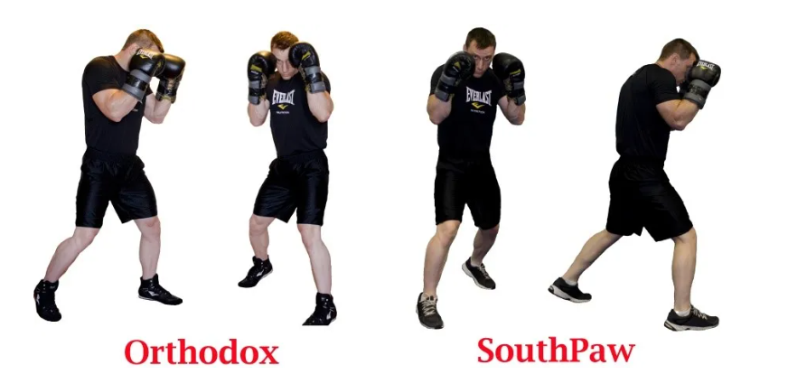
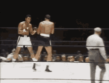
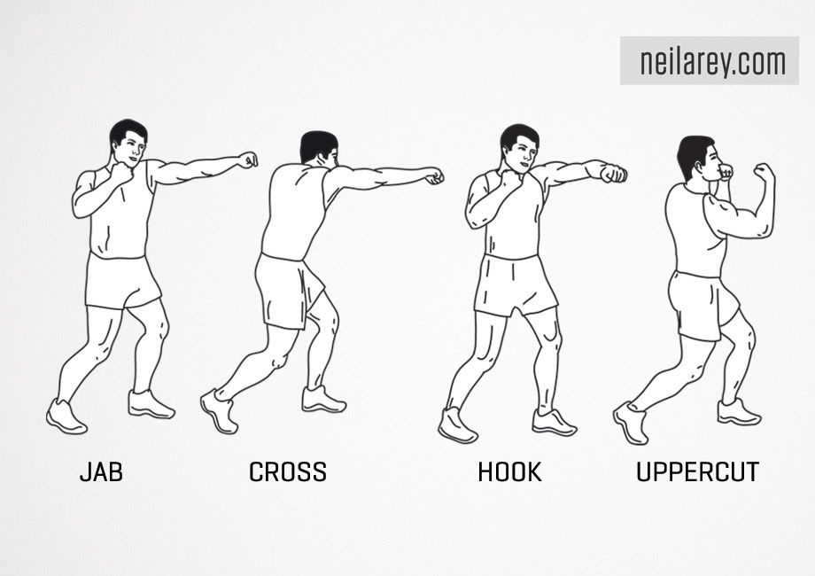
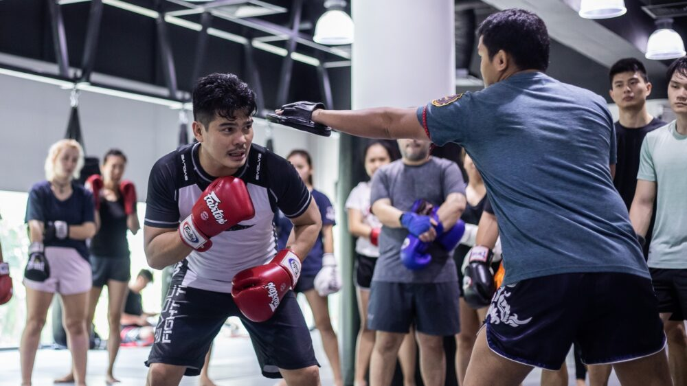
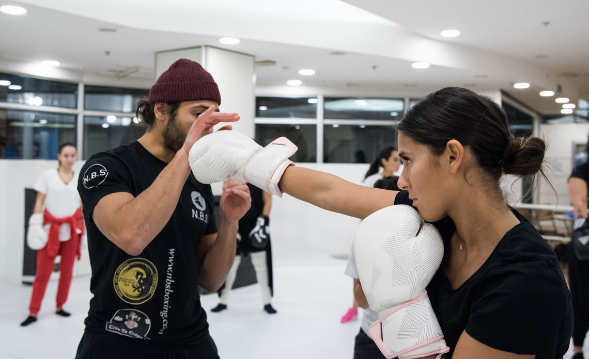

Stances
Two primary boxing stances exist: Orthodox, the most common, which places the left hand and foot in the lead, and Southpaw, which places the right hand and foot in the lead.
Within each stance lie many different variations and styles.

Footwork
Footwork in boxing refers to the boxer's movement around the ring and how they set their feet in order to punch, block and dodge.
Boxers always strive to be very light-footed in their movement around the ring; the importance of being light-footed, and the extent to which some fighters achieve it, is demonstrated by Muhammad Ali and Sugar Ray Robinson, who were said to be so light-footed that they floated around the ring.

Punches
There are eight basic punches in boxing, with six of them: the jab, cross, lead hook, rear hook, lead uppercut and rear uppercut, being the most used.
Not pictured, the lead overhand and rear overhand are the remaining basic punches.

Evading
Evading refers to actions a boxer takes to try to avoid strikes entirely by making their opponents miss.
Some evasion techniques include slipping, rolling, pulling away, and stepping away.

Blocking
Blocking refers to actions a boxer takes to absorb, redirect, intercept or slow the momentum of an opponents strikes preventing blows from impacting vital areas such as the head and midsection.
Some blocking techniques include parrying, catching, cross blocking, and shoulder blocking.